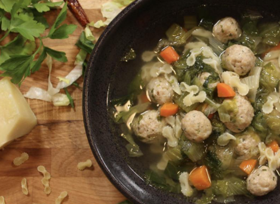

Italian Wedding Soup

Ingredients
For the Soup / Broth
- 4 carrots, cubed
- 3 stalks of celery, cubed
- 1/4 onion, diced
- 1/2 head of escarole, chopped
- 2 cups farfalline
- 4 Tbsp. olive oil
For the Meatballs
- 1 lb. ground turkey
- 1 cup pecorino cheese, shredded
- 1 cup panko crumbs
- 1 Egg
- 2 garlic cloves, minced
- Handful of parsley, chopped
- Salt and Pepper to taste
Instructions
- In a large pot, add the olive oil and saute the onions for about 2 minutes over medium heat. Add the carrots and celery and saute for about 2 minutes.
- Pour in the chicken stock and bring to a boil. Once boiling, reduce the heat to a medium/low flame to obtain a slow boil and cook for about 20 minutes. In the meantime, begin working on the meatballs.
- Next, in a big mixing bowl, add the ground turkey, garlic, egg, pecorino cheese, bread/panko crumbs, parsley, salt and black pepper. Use your hands to mix all together. Choose the size you’d like to make your meatballs and start rolling them all. Take into account that the meatballs grow when cooked in the soup so make them a bit smaller than you’d want them to be once cooked.
- Once done rolling them all, add them into the soup. Once the soup obtains the slow boil again, add in the escarole. Mix together a let cook for about 10 minutes.
- Bring a pot of water to a boil. Add a pinch of salt and the pasta. Cook as per the package instructions. I like to cook the pasta separately so that it doesn’t get overcooked in the soup if you have leftovers. Once done cooking, drain and scoop the amount of pasta you want into a bowl.
- Scoop in some soup into the bowl of pasta. Add a sprinkle of shredded pecorino cheese, serve and enjoy.